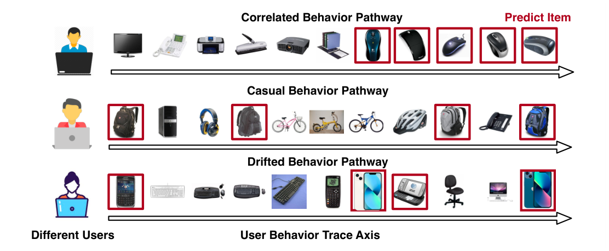
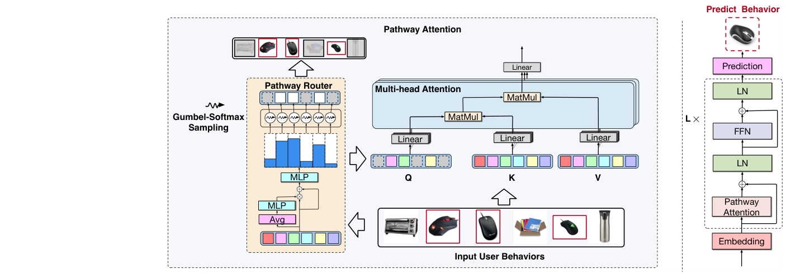

Recommender Transformers with Behavior Pathways (带行为路径的推荐 Transformer)
- 会议/期刊: WWW 2024
- 作者与机构: Zhiyu Yao, Xinyang Chen, Sinan Wang, Qinyan Dai, Yumeng Li, Tanchao Zhu, Mingsheng Long（清华大学软件学院/BNRist、阿里巴巴集团、清华大学工业工程系）
- 推荐链路定位: 召回（序列化下一物品预测）
- 研究方向: 序列与会话推荐 / 自监督对比学习与交互去噪
- 论文原文: 论文原文链接
- 开源代码: 暂未开源
TL;DR (1分钟核心速览)
序列推荐把用户历史当作"多条线程交织的剧本"，但真正能演化为下一步行为的只有极少数"关键行为"，标准自注意力对全部历史做稠密建模，导致关键信号被琐碎行为淹没。RETR 提出 Pathway Attention：每个 block 用路由器为每个 token 生成二值 keep/drop 路径，多层之间以 Hadamard 累积实现层级稀疏化，并用 Gumbel-Softmax 打通离散采样梯度；Query 只走路径内 token，K/V 保留全序列以维持上下文。在 7 个真实数据集、Leave-One-Out 划分 + 100 负采样的 HR@10/NDCG@10/MRR 协议下全面 SOTA（Tmall HR@10 +10.2%、NDCG@10 +17.5%），而参数量与 GFLOPs 与 SASRec 几乎持平。
Background & Motivation (背景与核心矛盾)
- 主流范式: SASRec / BERT4Rec / SMRec 等 Transformer 序列模型用全历史自注意力捕捉长程依赖，把推荐当作时序预测问题，已长期占据各榜单 SOTA。
- 前人局限: ①稠密注意力把"有效历史"与"噪声点击"一视同仁，最终预测被 trivial behaviors 稀释；②用户行为路径存在 Correlated / Casual / Drifted 三类形态（图 1），单一稠密权重无法针对不同用户动态切换关注点，尤其容易被近期"漂移兴趣"误导。
- 核心洞察 (Key Insight): 人类大脑只调用与当前情境相关的脑区——稀疏激活；类比到推荐，用户的未来行为只由一小部分 pivotal token 的路径决定，模型应当"按需激活"而非"全量联动"。
- 本文切入点: 把 Pathways 稀疏激活思想下沉到注意力内部，用可学习的二值路由替代手工注意力权重，让 Query 只在行为路径上聚合。

Method (核心方法设计)
1. 整体框架 (Overall Architecture)
输入沿用 sliding-window 将历史截断为定长 \(N\)序列，物品嵌入 + 可学习位置嵌入得\(Z^0=X_s\in\mathbb{R}^{N\times d}\)。模型堆叠\(L\)个 Pathway Attention 块与 FFN，每块接收上一 block 输出\(Z^{l-1}\)与前序路径\(R^{l-1}\)，路由器先根据全局池化信息生成 keep/drop 概率\(\pi\)，经 Gumbel-Softmax 采样并与前序路径逐元素相乘得到新路径\(R^l\)；注意力阶段用\(R^l\) 只对 Query 做门控，K/V 仍取全序列以保留上下文，最后用带 look-ahead mask 的多头注意力和 FFN 更新表示。预测层以末位置隐状态与物品嵌入内积打分，pairwise BPR 损失端到端优化。推理解码只需前向一次，路由器为轻量 MLP，几乎不增加算力。
flowchart TD
A["历史序列 i_1..i_N + 位置嵌入"] --> B["Pathway Router: 全局池化 + MLP → π"]
B --> C["Gumbel-Softmax 采样 R̂, 层级累积 R^l=R̂⊙R^{l-1}"]
C --> D["Pathway Attention: Q 门控, K/V 全序列"]
D --> E["FFN + LN, 堆叠 L=2 层"]
E --> F["内积打分 + pairwise BPR"]
2. 关键设计拆解 (Key Designs)
- 路径路由器 (Pathway Router)：痛点是对全部 token 平权建模会淹没关键行为 \(\to\)先用前序路径\(R^{l-1}\) 对被保留 token 做均值池化得到全局序列表示，再以残差方式注入每个 token，最后经 MLP 输出二分类分布：
直觉：池化把"漂移兴趣"压成全局上下文，使路由决策基于整条路径而非单点局部噪声，从而对 Casual 路径保留、对 Drifted 路径截断。
- Gumbel-Softmax 可微采样 + 层级路径更新：Bernoulli 采样不可导 \(\to\)用重参数化把 one-hot 松弛为\(\boldsymbol{v}_t\)：
层级乘积意味着 token 一旦在某层被丢弃，后续所有层永久失去路径资格，形成"逐层收紧"的稀疏演化路径，而非每层独立重抽的抖动路由。实验显示 \(\tau=0.8\)最优，\(\tau>1\)时分布趋于均匀（\(p\to0.5\)）导致过度不确定而掉点。
- Pathway Attention 与训练目标：Query 被路径门控、K/V 保留全量，兼顾"聚焦关键"与"不丢上下文"：
总损失为逐时刻负采样 pairwise ranking：\(\mathcal{L}=-\sum_{u}\sum_{t=1}^{n}\log\sigma\big(p(i_{t+1}|i_{1:t})-p(i^{-}_{t+1}|i_{1:t})\big)\)，每个时间步均匀采样 1 个负例（非 in-batch、非 hard negative），无额外正则项；\(L=2\)、\(h=4\)、\(d=256\)，在线开销与 SASRec 同量级。
Experimental Setup & Evaluation Protocol (实验设置与评估协议)
- 数据集与预处理: 全部按
5-core过滤（交互数 <5 的用户/物品剔除），按用户时间戳升序排列：
| 数据集 | #Users | #Items | #Interactions | 稀疏度/密度 | 特征/场景说明 |
|---|---|---|---|---|---|
| Beauty | 22,363 | 12,101 | 198,502 | 稀疏 | Amazon 美妆评论 |
| Sports | 25,598 | 18,357 | 296,337 | 稀疏 | Amazon 运动户外 |
| Toys | 19,412 | 11,924 | 167,597 | 稀疏 | Amazon 玩具 |
| Yelp | 30,431 | 20,033 | 316,354 | 中 | 本地商户（2019 年后交易） |
| MovieLens-1M | 6,040 | 3,416 | 1,000,000 | 稠密 | 电影评分 |
| Tmall | 66,909 | 37,367 | 427,797 | 中 | 电商购物日志 (IJCAI-15) |
| Steam | 334,730 | 13,047 | 3,700,000 | 稠密 | 游戏平台评论 |
- 数据划分与防穿越 (Splitting Strategy): 严格
Leave-One-Out——每用户最后 1 条为测试、倒数第 2 条为验证、其余训练；测试输入包含训练+验证行为，因果性由 look-ahead mask 保证。 - 排名评测协议 (Ranking Protocol):
Sampled Ranking，每个 ground-truth 与 100 个随机未交互负例 共同排序（正负比 1:100），报告 HR@10 / NDCG@10 / MRR，三次重复取均值（沿用 SASRec 标准协议，未做 Full-Ranking）。 - 对比基线与超参设置: 非序列 PopRec；CNN 类 Caser；RNN 类 GRU4Rec；Transformer 类 BERT4Rec、SASRec、SASRec+（时间嵌入）、SMRec（自调制注意力）。Adam，lr=0.001，batch=512，最大 200 epoch，早停 10 epoch，\(d=256\)，\(N=100\)（MovieLens 为 200），单卡 3090。
Key Experimental Results (实验关键数据)
1. 主实验对比 (Main Results)
HR@10 / NDCG@10（加粗为最优，Improv. 为相对最强基线 SMRec 的提升）：
| Dataset | Caser | GRU4Rec | BERT4Rec | SASRec | SASRec+ | SMRec | RETR | Improv. (HR) |
|---|---|---|---|---|---|---|---|---|
| Beauty | .3942/.2512 | .4106/.2584 | .4739/.2975 | .4696/.3156 | .4798/.3261 | .4826/.3238 | .5034/.3425 | +4.3% / +5.8% |
| Sports | .4014/.2390 | .4299/.2527 | .4722/.2775 | .4622/.2869 | .4776/.2987 | .4853/.3061 | .5083/.3175 | +4.7% / +3.7% |
| Toys | .3540/.2183 | .3896/.2274 | .4493/.2698 | .4663/.3136 | .4729/.3183 | .4754/.3198 | .5104/.3395 | +7.4% / +6.2% |
| Yelp | .6661/.4198 | .7265/.4375 | .7597/.4778 | .7373/.4642 | .7481/.4757 | .7548/.4789 | .7730/.5136 | +2.4% / +7.2% |
| MovieLens-1M | .7886/.5538 | .5581/.3381 | .8269/.5965 | .8233/.5936 | .8291/.6057 | .8302/.6079 | .8467/.6351 | +2.0% / +4.5% |
| Tmall | .5943/.4513 | .6432/.5169 | .6196/.5025 | .6275/.5049 | .6392/.5169 | .6476/.5192 | .7138/.6103 | +10.2% / +17.5% |
| Steam | .7874/.5381 | .4190/.2691 | .8656/.6283 | .8729/.6306 | .8773/.6397 | .8792/.6408 | .9001/.6795 | +2.4% / +6.0% |
2. 消融实验 (Ablation Study)
| 变体（Beauty / Yelp） | 设置 | MRR |
|---|---|---|
| RETR 完整模型 | L=2 | 0.3067 (Yelp 0.4354) |
| w/o Pathway Router（随机保留/丢弃 token） | L=2 | 0.2793 (−8.9%) |
| w/o 层级更新 \(R^l=\hat R^l\odot R^{l-1}\) | L=2 | 0.2957 (−3.6%) |
| SASRec（路由恒为 1 的退化特例） | L=2 | 0.2852 (−7.0%) |
| RETR (L=1 / L=3 / L=4) | — | 0.2966 / 0.3058 / 0.3052 |
| 温度 \(\tau\)=0.4 / 0.8 / 1 / 2（Yelp） | — | 0.4312 / 0.4354 / 0.4292 / 0.4183 |
| 效率：RETR vs SASRec vs SMRec（Yelp） | Params (M) / GFLOPs | 5.021/9.558 vs 4.916/9.552 vs 5.173/9.864 |
3. 关键实验发现 (Key Findings)
- 稀疏数据集收益最大，说明方法本质是抗噪：Toys 的 HR@10 相对 SMRec 提升 7.4%、Tmall 提升 10.2%（NDCG@10 高达 +17.5%），而稠密的 MovieLens/Steam 提升约 2%——噪声比例越高（平均每用户交互少），路径路由器剔除 trivial token 的边际收益越大。
- 路由器是必要而非装饰：把路由器换成随机 keep/drop，MRR 从 0.3067 掉到 0.2793（甚至低于 SASRec 的 0.2852），证明"数据依赖的可学习路由"才是增益来源；层级累积更新单独贡献 +3.6%，说明 token 一旦离径即永久离径的"单调收紧"约束比每层独立重采样更稳定。
- 层数为 2 即饱和，路径不宜过深：L=1→2 带来 +3.4% MRR，L=3/4 反而回落（0.3058/0.3052）；同时 \(\tau>1\) 时 Gumbel 分布趋于均匀使 MRR 跌至 0.4183，说明适度确定的软采样才既保梯度又保路径锐度。参数量/GFLOPs 与 SASRec 基本持平（5.02M vs 4.92M）却 MRR 从 0.3927 提到 0.4354，是"零成本换增益"。
Highlights & Limitations (亮点、对比与审稿批判)
- 与代表作对比 (vs. Prior Work): 相对 SASRec/BERT4Rec 这类"全历史稠密注意力"模型，RETR 的核心差别是把注意力权重重构为 hard 二值路径 + 软采样，稀疏性发生在 Query 侧而非权重侧；相对 SMRec 的"时间权重调制"，RETR 的调制信号来自全局路径上下文而非手工时间衰减，故能同时抵抗 Casual 噪声与 Drifted 兴趣。与 Switch Transformer/MoE 的 expert routing 不同，这里路由的是"行为 token"而非 FFN 专家。
- 可迁移亮点: ①"Q 门控、K/V 全量"的设计可直接套用到长序列去噪、会话内噪声点击过滤等任务，既稀疏又不丢上下文；②层级 Hadamard 累积的单调门控可迁移到多路特征选择/多任务共享单元，避免逐层抖动。
- 审稿级局限批判: ①评估仅用
100 负采样 Sampled Ranking，未报告 Full-Ranking，负例数量对 HR/NDCG 绝对值影响大，跨论文可比性受限；②路由概率、\(L\)、\(\tau\) 三个超参需在验证集网格搜索，且 Gumbel 采样引入训练随机性（论文只报三次均值、无显著性检验）；③可视化仅用 GradCAM 单用户示例，缺乏"路径长度/保留率 vs 性能"的定量分析。
Rating (四维评分)
- 方法创新性 (Novelty): ⭐⭐⭐⭐ （把 Pathways 稀疏激活下沉至注意力 Query 侧，二值路径 + Gumbel 采样 + 层级累积的组合在序列推荐中属首次，动机清晰但理论分析偏直觉）
- 评估协议与实验扎实度 (Protocol & Experiments): ⭐⭐⭐⭐ （7 个跨规模跨场景数据集、6 类基线、消融/温度/层数/效率全覆盖，扣分在于仅 100 负采样且缺少显著性检验）
- 写作与数学规范度 (Clarity & Rigor): ⭐⭐⭐ （路由与注意力公式推导完整、变量定义清楚，但原文预印本存在大量重复段落与 AdaShare 内容串扰，图注与正文偶有不符）
- 工业落地与复现价值 (Industrial & Practical Value): ⭐⭐⭐⭐ （路由器仅 MLP，参数量与 GFLOPs 与 SASRec 持平，增量部署成本极低；可惜未开源代码，复现需自行调 \(\tau\) 与路由正则）